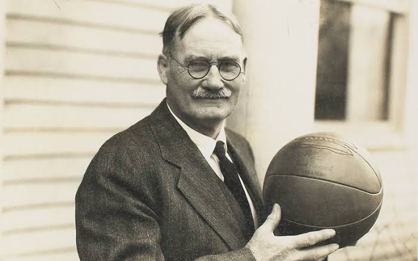
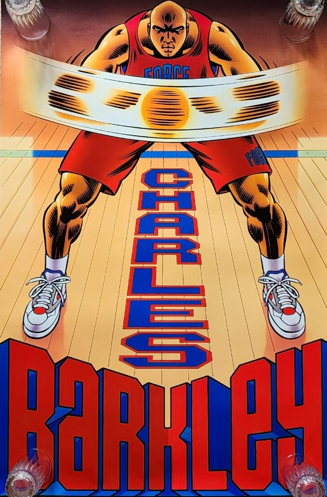

Esta pagina se enfocara en el Basquetbol
El básquetbol o baloncesto es un deporte de equipo que se juega entre dos conjuntos de cinco jugadores cada uno. El objetivo es encestar una pelota en el aro del equipo contrario, que está colocado a una altura de 3.05 metros (10 pies) sobre el suelo, para anotar puntos. El equipo que logre más puntos al final del partido gana.
El baloncesto fue inventado en 1891 por James Naismith, un profesor de educación física canadiense, como una forma de mantener a los estudiantes activos en invierno.
El balón de baloncesto mide entre 74.9 cm y 76.2 cm de circunferencia y debe pesar entre 567 y 650 gramos. Está diseñado para un buen rebote y agarre.
La primera liga profesional de baloncesto fue la National Basketball League (NBL) en 1898, que se formó en los Estados Unidos. A pesar de su corta duración, sentó las bases para las ligas futuras como la NBA.
